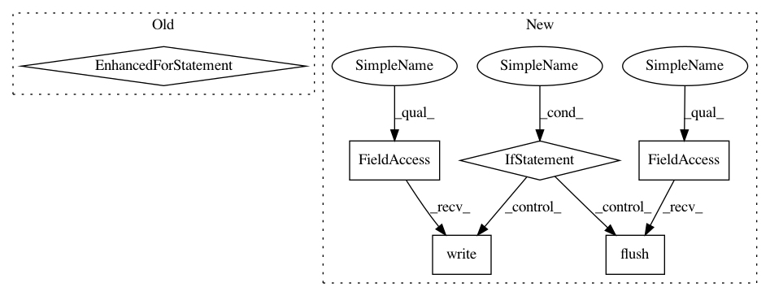

71d61f102189f8b7337567ca34ad590f2ddf4808,snntoolbox/simulation/target_simulators/INI_ttfs_target_sim.py,SNN,simulate,#SNN#,34
Before Change
print("Finished early.")
break
for b in range(self.batch_size):
for l in range(self.num_classes):
spike = 0
for t in range(self._num_timesteps):
if output_b_l_t[b, l, t]:
spike = True
output_b_l_t[b, l, t] = spike
self.avg_rate /= self.batch_size * np.sum(self.num_neurons) * \
self._num_timesteps
if self.spiketrains_n_b_l_t is None:
After Change
none_class_b = -1 * np.ones(self.batch_size)
clean_guesses_b = np.where(undecided_b, none_class_b, guesses_b)
current_acc = np.mean(kwargs[str("truth_b")] == clean_guesses_b)
if self.config.getint("output", "verbose") > 0:
if sim_step % 1 == 0:
echo("{:.2%}_".format(current_acc))
else:
sys.stdout.write("\r{:>7.2%}".format(current_acc))
sys.stdout.flush()
if self.config.getboolean("conversion", "softmax_to_relu") and \
all(np.count_nonzero(output_b_l_t, (1, 2)) >= self.top_k):
print("Finished early.")
break
In pattern: SUPERPATTERN
Frequency: 3
Non-data size: 6
Instances
Project Name: NeuromorphicProcessorProject/snn_toolbox
Commit Name: 71d61f102189f8b7337567ca34ad590f2ddf4808
Time: 2018-02-27
Author: bodo.rueckauer@gmail.com
File Name: snntoolbox/simulation/target_simulators/INI_ttfs_target_sim.py
Class Name: SNN
Method Name: simulate
Project Name: GoogleCloudPlatform/python-docs-samples
Commit Name: d0e0042b5bdb9af188f9deb6ded5f56e6ba50fb6
Time: 2016-10-21
Author: jerjou@users.noreply.github.com
File Name: speech/grpc/transcribe_streaming.py
Class Name:
Method Name: listen_print_loop
Project Name: NeuromorphicProcessorProject/snn_toolbox
Commit Name: 71d61f102189f8b7337567ca34ad590f2ddf4808
Time: 2018-02-27
Author: bodo.rueckauer@gmail.com
File Name: snntoolbox/simulation/target_simulators/INI_ttfs_target_sim.py
Class Name: SNN
Method Name: simulate
Project Name: scipy/scipy
Commit Name: c87fc5e78504b9004cdf711cbbf5eac4a4dc70ea
Time: 2015-11-09
Author: evgeni@burovski.me
File Name: tools/refguide_check.py
Class Name:
Method Name: main